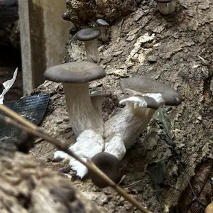
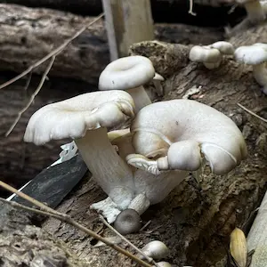
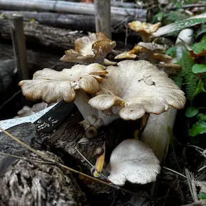
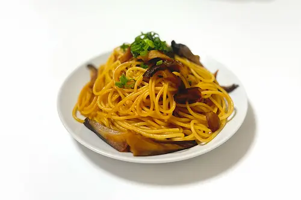

ヒラタケ
| 分類 | ヒラタケ科／ヒラタケ属 |
|---|---|
| 時期 | 晩秋 〜 春 |
| 食用 | 食 |
特徴
傘は半円形から扇形。表面の色は、初めはほぼ黒→灰色→灰褐色→白色に変化する。
切り株などに重なり合って発生する。
西欧ではオイスターマッシュルームの名で好まれている。
優秀な食菌で、広く人工栽培され「しめじ」の名で売られている。
成長過程

01: 少し成長したヒラタケの様子
傘の色は黒い

 別の場所でとれたものはヒダが美しく整っていて食べごろ
別の場所でとれたものはヒダが美しく整っていて食べごろ
02: 翌日、少し成長した様子
かさの色が少し薄くなった
別の場所でとれたものはヒダが美しく整っていて食べごろ

03: 3日後、全体的に大きくなり、色も白くなった
周りにもたくさん生えている

04: さらに大きくなり、傘の縁が波打っている
 傘の下に見える白い粒は胞子の影響
傘の下に見える白い粒は胞子の影響

05: 老菌で、傘の縁が波打っている

06: 01から2週間後、乾燥が進み、収縮した老菌
黄色くなり、倒れている
きのこレシピ
ひらたけのバター醤油パスタ
材料（1人分）
- パスタ 100g
- 冷凍ひらたけ 120〜150g
- バター 10g
- 醤油 小さじ1と1/2
- 塩コショウ 少々
- 小口ねぎ （あれば）
作り方
- パスタを袋の表示通りにゆでる。
- フライパンにバターを熱し、凍ったままのひらたけを炒める。
- 醤油を回し入れ、ゆで上がったパスタを加えて塩コショウで味を調える。
- 器に盛り小口ねぎを散らしたら、完成！
